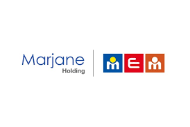

Quiz Data Connect - Page 2
Continuons avec les questions suivantes.
8. Quel est le principal bénéfice mentionné dans la vidéo de Fatim Sefrioui et Hakim Mataich ? (1 point)
Gain de marge
Gain d'efficacité et de temps
Augmentation du nombre de clients
Augmentation du nombre de clients
9. La transformation digitale est-elle un projet à court terme ? (1 point)
Oui
Non
10. Quelle est la principale raison de la transformation digitale selon Zakaria Essalhi ? (1 point)
Réduire les coûts
Améliorer les processus internes
Augmenter la satisfaction client
Se conformer aux régulations
Soumettre
Nous respectons votre confidentialité. Vos réponses resteront anonymes et seront utilisées uniquement à des fins d'amélioration de nos services.